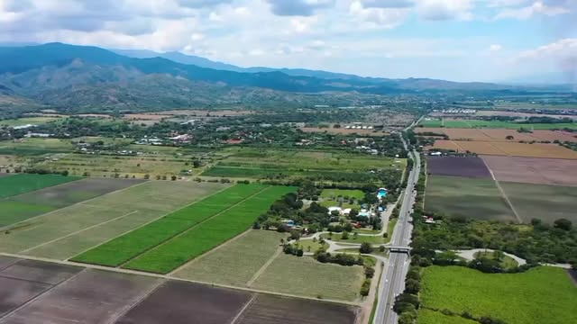
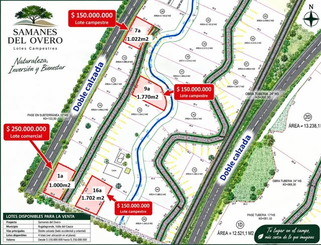
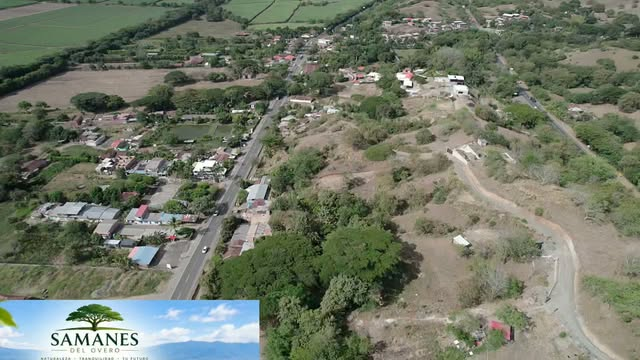
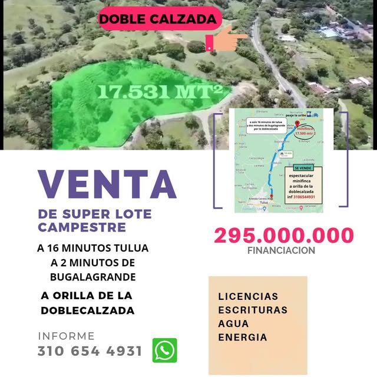
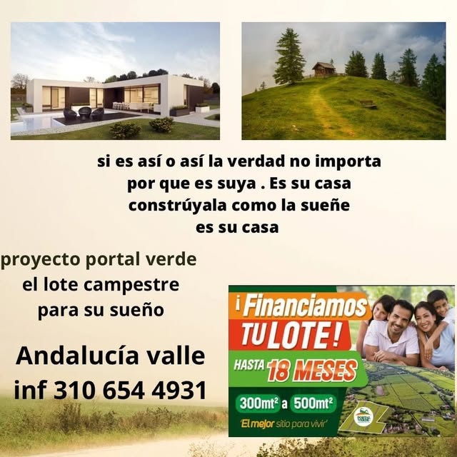
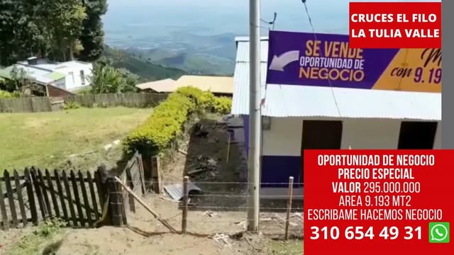
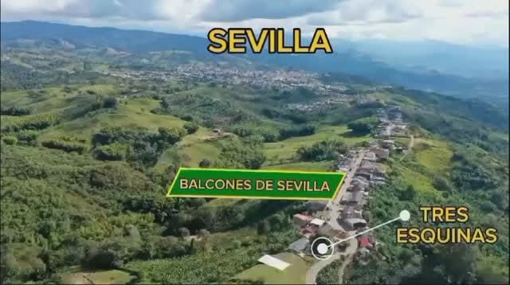
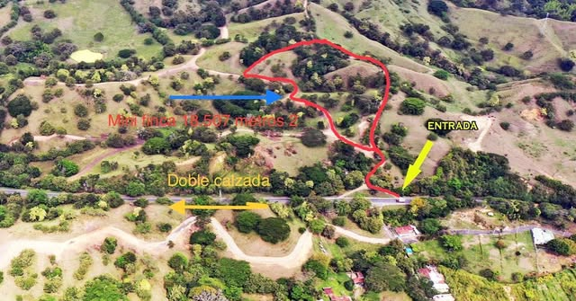

Chancos · TuluáLotes Campestres Comfandi
Junto al centro recreacional Comfandi, a 2 minutos de la doble calzada Tuluá–Buga. Escrituras inmediatas.
$115.000 por m²
1.000 – 3.500 m²Cuota inicial 30%Hasta 5 años
Tuluá · Bugalagrande · Valle del Cauca
Lotes campestres con escritura, servicios y financiación directa. Te asesoramos desde la primera visita hasta la firma.
Proyecto destacado
Lotes campestres sobre la doble calzada, entre Bugalagrande y Tuluá. Para construir tu casa, invertir o asegurar patrimonio.


Cada lote tiene escritura independiente y acceso a agua, energía y alcantarillado. Te enviamos los mapas actualizados con medidas y precios por WhatsApp.
Más oportunidades
Campestres, comerciales y de inversión. Escríbenos y te contamos cuáles siguen disponibles.

Chancos · TuluáJunto al centro recreacional Comfandi, a 2 minutos de la doble calzada Tuluá–Buga. Escrituras inmediatas.
$115.000 por m²

Doble calzadaA orilla de la doble calzada, 16 minutos de Tuluá y 2 de Bugalagrande. Con licencias, escrituras, agua y energía.
$295.000.000 con financiación

AndalucíaEl lote campestre para la casa que sueñas. Lotes pequeños con financiación directa para empezar ya.
Hasta 18 meses de financiación

La TuliaFinca con punto de negocio y una vista que domina todo el Valle del Cauca. Un lugar privilegiado.
$295.000.000 precio especial

SevillaLotes de montaña en el sector Tres Esquinas, con clima fresco y vista abierta al paisaje cafetero.
Consulta disponibilidad

BugalagrandeTerreno de inversión a la orilla de la doble calzada, ideal para bodegas, cultivo o proyecto comercial.
Consulta precio actualizado
Precios tomados de nuestras publicaciones. Pueden cambiar; confirma disponibilidad y valor por WhatsApp.
Por qué con nosotros
Te acompañamos en todo el proceso de compra con asesoría inmobiliaria personalizada.
Lotes con escritura independiente y, en varios proyectos, escrituración inmediata.
Planes desde 18 meses hasta 90 meses, sin pasar por el banco.
Agua, energía y alcantarillado para que empieces a construir sin demoras.
Proyectos cerca de la doble calzada Tuluá–Buga, con acceso fácil y alta valorización.
Dónde estamos
Nuestros proyectos están sobre el eje de la doble calzada Tuluá–Buga y en las montañas del norte del Valle. Pregúntanos por la ruta y te acompañamos a conocer el lote.
Asesoría inmobiliaria
Escríbenos para separar tu cita. Te enviamos mapas, precios y opciones de financiación, y te acompañamos a conocer el lote.